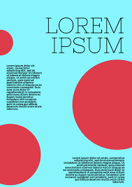

Good Example
This flyer effectively uses contrast with bold, dark text on a light background, making the content stand out.
This flyer effectively uses contrast with bold, dark text on a light background, making the content stand out.
The event poster has light text on a bright background, making it difficult to read. I would improve it by darkening the text color and increasing its size.
This menu groups appetizers, main courses, and desserts clearly, making it easy to navigate.
The brochure scatters related details across different sections. Grouping them closer together would improve readability.